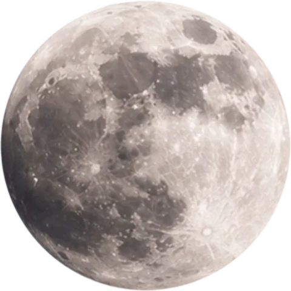

你看到：主线在零线上并领先信号线
这说明什么：量价力快平均占优，近期也较慢参考更强。
还不能说明什么：不保证价格随后上涨。

跳到教程正文从零理解的中文读图课 · 进阶
把成交量、方向和价格范围合成力度，再比较快慢平均，看量价推动是否增强。
模拟资产，非真实历史或预测。每根为1小时已收盘K线；展示48根，指标另用前72根预热。图较宽时左右滑动，或展开数值表。
Klinger 34/55/13 · 股: KVO 2,139 / Signal 20 · 末根已收盘读数
副图按典型价比前一根升或降，给成交量加上正号或负号，再取EMA34−EMA55，蓝灰虚线是13期信号线。这是TradingView内置的简化公式，克林格原版还考虑了趋势与累计波幅，数值不同。
最后一根：开 100.84，高 101.62，低 100.15，收 101.28；成交 53,674 股。先在图最右边找到它，再与表格核对。
| 时间 | O | H | L | C | 成交量 |
|---|---|---|---|---|---|
| 01-04 00:00 | 102.19 | 102.38 | 101.82 | 102.32 | 14376 |
| 01-04 01:00 | 102.32 | 102.46 | 102.21 | 102.42 | 10321 |
| 01-04 02:00 | 102.42 | 102.44 | 101.68 | 101.68 | 16634 |
| 01-04 03:00 | 101.68 | 101.82 | 101.30 | 101.82 | 7165 |
| 01-04 04:00 | 101.82 | 101.89 | 101.53 | 101.73 | 5764 |
| 01-04 05:00 | 101.73 | 101.94 | 101.63 | 101.73 | 6506 |
| 01-04 06:00 | 101.73 | 102.04 | 101.54 | 101.69 | 8801 |
| 01-04 07:00 | 101.69 | 101.94 | 101.40 | 101.79 | 11515 |
| 01-04 08:00 | 101.79 | 101.88 | 101.42 | 101.70 | 8681 |
| 01-04 09:00 | 101.70 | 101.92 | 101.42 | 101.92 | 12800 |
| 01-04 10:00 | 101.92 | 102.05 | 101.62 | 101.68 | 13727 |
| 01-04 11:00 | 101.68 | 102.11 | 101.64 | 102.11 | 32879 |
| 01-04 12:00 | 102.11 | 102.46 | 102.11 | 102.40 | 16864 |
| 01-04 13:00 | 102.40 | 102.92 | 102.37 | 102.92 | 28244 |
| 01-04 14:00 | 102.92 | 103.30 | 102.65 | 102.87 | 40685 |
| 01-04 15:00 | 102.87 | 103.10 | 102.20 | 102.36 | 60611 |
| 01-04 16:00 | 102.36 | 103.03 | 102.19 | 102.92 | 67942 |
| 01-04 17:00 | 102.92 | 103.19 | 102.70 | 103.00 | 34637 |
| 01-04 18:00 | 103.00 | 103.05 | 102.32 | 102.50 | 53976 |
| 01-04 19:00 | 102.50 | 102.79 | 102.06 | 102.17 | 36053 |
| 01-04 20:00 | 102.17 | 102.69 | 101.97 | 102.58 | 34200 |
| 01-04 21:00 | 102.58 | 102.73 | 102.18 | 102.60 | 23454 |
| 01-04 22:00 | 102.60 | 102.68 | 102.21 | 102.27 | 21251 |
| 01-04 23:00 | 102.27 | 102.67 | 102.19 | 102.51 | 13238 |
| 01-05 00:00 | 102.51 | 102.61 | 102.08 | 102.19 | 11110 |
| 01-05 01:00 | 102.19 | 102.23 | 101.50 | 101.54 | 15225 |
| 01-05 02:00 | 101.54 | 101.74 | 101.17 | 101.45 | 8036 |
| 01-05 03:00 | 101.45 | 101.97 | 101.37 | 101.80 | 8568 |
| 01-05 04:00 | 101.80 | 101.80 | 101.22 | 101.32 | 8310 |
| 01-05 05:00 | 101.32 | 101.78 | 101.27 | 101.63 | 10655 |
| 01-05 06:00 | 101.63 | 101.96 | 101.21 | 101.90 | 15133 |
| 01-05 07:00 | 101.90 | 102.22 | 101.86 | 102.14 | 5966 |
| 01-05 08:00 | 102.14 | 102.52 | 101.96 | 102.24 | 7860 |
| 01-05 09:00 | 102.24 | 102.45 | 101.76 | 102.34 | 15328 |
| 01-05 10:00 | 102.34 | 102.64 | 102.13 | 102.46 | 9226 |
| 01-05 11:00 | 102.46 | 102.98 | 102.42 | 102.46 | 10016 |
| 01-05 12:00 | 102.46 | 102.51 | 101.94 | 102.07 | 12897 |
| 01-05 13:00 | 102.07 | 102.44 | 102.01 | 102.10 | 6636 |
| 01-05 14:00 | 102.10 | 102.21 | 101.63 | 101.87 | 8213 |
| 01-05 15:00 | 101.87 | 101.98 | 101.49 | 101.60 | 10754 |
| 01-05 16:00 | 101.60 | 101.62 | 101.32 | 101.33 | 11573 |
| 01-05 17:00 | 101.33 | 101.42 | 100.84 | 101.16 | 14527 |
| 01-05 18:00 | 101.16 | 101.68 | 100.93 | 101.48 | 14715 |
| 01-05 19:00 | 101.48 | 101.77 | 101.30 | 101.64 | 10355 |
| 01-05 20:00 | 101.64 | 101.64 | 99.76 | 99.76 | 64555 |
| 01-05 21:00 | 99.76 | 101.31 | 99.51 | 101.04 | 69006 |
| 01-05 22:00 | 101.04 | 101.28 | 99.80 | 100.84 | 67255 |
| 01-05 23:00 | 100.84 | 101.62 | 100.15 | 101.28 | 53674 |
最后一根收盘不低于开盘，所以是绿空心；实体高度是 0.44 美元，整根高低范围是 1.47 美元。同一根读数：KVO 2,139、Signal 20；这是对已收盘数据的描述，不是对下一根的预测。
形状像真实交易图，数据仍是教学模拟；不据此推断真实市场胜率。后面的小数字算例独立演算，不是上图的逐点数据。
推车方向、距离与用力多少一起考虑。
示例：价格创新高而 Klinger 没创新高，计算中的力度没有同步加强，只能作为提醒。
把成交量与价格方向、范围变化结合，再比较快慢变化，观察量价推动的节奏。Klinger 不是直接扫描资金账户，名字里的力度来自公式构造。
希望在价格趋势之外，多看一层量价推动是否同步，或短期改善是否仍处在长期偏弱背景时使用；需要连续可靠的成交量。
先找位置，再认单位；不同软件可能用不同颜色，认名称和含义比记颜色更可靠。
这说明什么：量价力快平均占优，近期也较慢参考更强。
还不能说明什么：不保证价格随后上涨。
这说明什么：偏弱背景中出现相对改善，可能只是下行动力缓和。
还不能说明什么：不代表净方向已经转正。
这说明什么：这套量价推动没有同样强地呼应新高。
还不能说明什么：背离不是反转日期表。
Volume Force 不是账户数据；背离可能很久都不反转。
下面是虚构的读图练习，不是当前行情。重点是学会从看到的现象推导出合理解释。
虚构日线：Klinger 主线 −5000、信号 −3000；后来 −1500、−2500；再后来 +1000、−500。
用两个参照分别判断方向与变化速度，避免把负区交叉夸大为完整反转。
但不要跳到这个结论：数值不能换算为机构买入数量，也无法区分每笔交易者的真实意图。
Klinger=−1000，信号=−2000，是不是已在零线上？
不是。它只是在信号线上方，负区说明快慢量价力背景仍偏负；两个参照不可混淆。
能说清“看见什么 → 代表什么 → 还不能确定什么”，再去下面的软件操作部分照着练习。
Stephen J. Klinger
官方记载由 Stephen Klinger 开发和介绍。
提出者、推广者和第一个实际使用的人是三回事。这里按可追溯资料写明，不把后来的推广者一律说成最早创始人。
以下按电脑网页版编写，依据 2026-10-19 查阅的官方帮助。手机App的入口位置可能不同，部分功能还受账号权限和数据源限制。
本条目搜索词：Klinger Oscillator
TradingView 官方有对应指标说明，可先在内置技术指标中按英文名称查找。 常见 Fast34/Slow55/Signal13，需成交量；先看零线，再看信号线。
本条目搜索词：Klinger / Klinger Oscillator
尚未逐项核实 AiCoin 当前版本是否提供此指标。以下为搜索词，不保证搜得到；若有同名脚本，先核对公式与参数。 若找到对应实现：常见 Fast34/Slow55/Signal13，需成交量；先看零线，再看信号线。
本轮没有可确认的中文视频，用本页中文文字教程补齐。
文字教程是本站整理；视频仍保留原来源，视频标题中的收益或胜率宣传不代表已验证。
读图课程更新：2026-10-20。例子用于帮助读懂图表，不代表买卖建议。